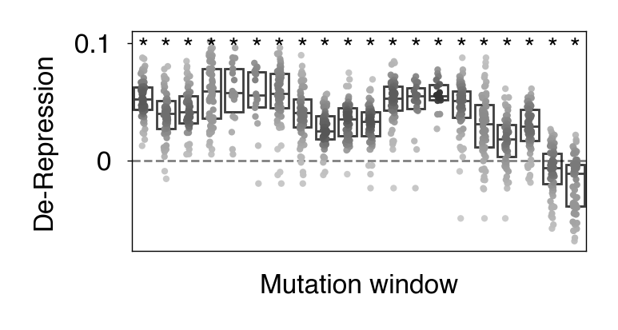

Note
This page was generated from a Jupyter notebook.
Download the notebook
Make main text figures
[1]:
import sys
from library_analyzer import Library, PlottingContext
import numpy as np
np.bool = np.bool_
from mavenn import Model
import pandas as pd
import matplotlib.pyplot as plt
from sklearn.metrics import r2_score
import seaborn as sns
from matplotlib import rc_context
from scipy.stats import ttest_1samp, false_discovery_control, gaussian_kde
Setup plotting defaults
[2]:
defaults = {}
defaults['axes.linewidth'] = 0.25
defaults['grid.linewidth'] = 0.25
defaults['lines.linewidth'] = 0.5
defaults['lines.markersize'] = 1
defaults['patch.linewidth'] = 0.25
defaults['xtick.major.width'] = 0.25
defaults['ytick.major.width'] = 0.25
defaults['xtick.minor.width'] = 0.25
defaults['ytick.minor.width'] = 0.25
defaults['xtick.major.size'] = 1
defaults['ytick.major.size'] = 1
defaults['xtick.minor.size'] = 0.75
defaults['ytick.minor.size'] = 0.75
defaults['font.size'] = 6
defaults['axes.labelsize'] = 6
defaults['axes.titlesize'] = 6
defaults['xtick.labelsize'] = 6
defaults['ytick.labelsize'] = 6
defaults['legend.fontsize'] = 6
defaults['legend.title_fontsize'] = 6
defaults
[2]:
{'axes.linewidth': 0.25,
'grid.linewidth': 0.25,
'lines.linewidth': 0.5,
'lines.markersize': 1,
'patch.linewidth': 0.25,
'xtick.major.width': 0.25,
'ytick.major.width': 0.25,
'xtick.minor.width': 0.25,
'ytick.minor.width': 0.25,
'xtick.major.size': 1,
'ytick.major.size': 1,
'xtick.minor.size': 0.75,
'ytick.minor.size': 0.75,
'font.size': 6,
'axes.labelsize': 6,
'axes.titlesize': 6,
'xtick.labelsize': 6,
'ytick.labelsize': 6,
'legend.fontsize': 6,
'legend.title_fontsize': 6}
[3]:
rc_defaults = {
"font.family" : 'sans-serif',
"font.sans-serif" : 'Helvetica',
'figure.autolayout' : True,
"figure.figsize" : (1.4,1.4),
"figure.dpi": 400
}
rc_double_wide = rc_defaults.copy()
rc_double_wide["figure.figsize"] = (3.4,1.4)
# with rc_context(rc_double_wide):
sns.set_context(defaults, rc = rc_defaults)
plt.rcParams.update(rc_defaults)
grey_cmap = sns.blend_palette(['0.8','0.2'],as_cmap=True)
to_blue_cmap = sns.blend_palette(['#9FB6CD','#27408B'],as_cmap=True)
heatmap_cmap = sns.blend_palette(['#9FB6CD','xkcd:white','#CD3333'],as_cmap=True)
alt_heatmap_cmap = sns.blend_palette(['#27408B','xkcd:white','#CD3333'],as_cmap=True)
alt_heatmap_cmap
[3]:
blend

under
bad
over
[4]:
def make_density(x):
if len(x)<2:
density = pd.Series(np.ones((len(x))))
else:
density = pd.Series(gaussian_kde(x).evaluate(x))
density.index=x.index
return(density)
def ttester(x):
pvals = ttest_1samp(x,0).pvalue
return(pvals)
wts = {'TRF_perfect':'TGGCGCCCGAACAGGGACTTGA',#+'AGAATGGCAGAGAGATGCTAAGAGGA',
'Josh_match':'TGGCGCCCGAACAGGGACCTGA',#+'AGAATGGCAGAGAGATGCTAAGAGGA',
'Native_MusD6':'TGGCGCCAGAACTGGGACCTGA',#+'AGAATGGCAGAGAGATGCTAAGAGGA'}
}
Load data
[5]:
lib = Library.load('../data/processed/allNOindel_1PBS_seq_MPRA.lib.pkl')
[6]:
negative_ctrls = pd.read_csv('../data/negcontrol.txt', header=None).values.flatten()
negative_ctrls
[6]:
array(['CTAGCGACTAAACACATCAA', 'GGATCCGACTAAACACATCAA',
'AATCGGCGACTAAACACATCAA', 'TCATGAGCGACTAAACACATCAA',
'GCCTAAGCCGACTAAACACATCAA', 'TTAAGGCTATGAAGAGATAC',
'CGTATAGCTATGAAGAGATAC', 'AGACTAAGCTATGAAGAGATAC',
'TCAGATAAGCTATGAAGAGATAC', 'CAGTACAAAGCTATGAAGAGATAC',
'CATGTATTGGCCTGTATTAG', 'GTCAGTATTGGCCTGTATTAG',
'TCATGATATTGGCCTGTATTAG', 'AGTGACATATTGGCCTGTATTAG',
'ACAGTGCATATTGGCCTGTATTAG', 'TATGAACGTGAATTGCTCAA',
'GGAATAACGTGAATTGCTCAA', 'CATAAGAACGTGAATTGCTCAA',
'CTAGAAACACGTGAATTGCTCAA', 'GGTACAAACACGTGAATTGCTCAA',
'AGTCCAGGGACAAGCCCGCGGT', 'AACTACACAAATCAGCGGCTAA',
'CATAGAGAAGTATCGAATCAGA', 'GATTATGTCCGGTTATAGTACT',
'AACTCGTTAAGTGCAAGAATAC', 'TAGCGACTAAACACATCACTGA',
'TCAGGTCCCTGTTCGGGCGCCA', 'AAGTTTTCACTCCAGCTAACAG',
'GGGGCTACGTCCAGGAGCGCAT', 'CATTCTACCCACTCGAAGACGG',
'GCGCTCACCAGGCACGGAGAGT', 'GGACGCAGGACCGCCAACTGGT',
'GACCGCACGACGGCCAAGGTGT', 'GCGGCACGACCGGGACCATAGT',
'GCCACACGGGCACGGGATAGCT', 'GCCGAGGATCCAGTAACGGCCG',
'GACGTGAGACCGGCATCAGGCC', 'GCCACCGGAGCGGACATTGCAG',
'GCGTCGATAGCGGCCACGAACG', 'GCAGCGGATGCGCATCAGGACC',
'GACGCGGTCGGTCCAACGGAAC', 'GCAATGGACCGTGCCACGGCAG',
'GCTGAAGGACCGCAATCGGCCG', 'GCAACAGGCGCGTCACTGGACG',
'GCCGAGGACTAAGCTACGGCCG', 'GACGCGGAACCAGCGTCTAGCG',
'GGCCAGGACGTCGCCAAGGTCA', 'GCGCGACGCACCGAGAGTACGT',
'GAGGGAGCGCACCCACGTAGCT', 'GCGTCGGGAGCGCCACACTGAA',
'GCGCCACGAGAGCCGGTAGTCA', 'GCGCGAGGGACGCTCCAGACAT',
'GACCGAGCAGGTGCGCGTACCA', 'GGCCACGGGACGGGCTATCACA',
'GGTCGCCACGCACGGGACATGA', 'GAGGCGCAGCAGTCCCGTACGA',
'GAGCGCAGCCGGTCGCACTGAA', 'GGCACACGGTCCGGAGCAGTCA',
'GACGCAGACCGGTCTCGAGACG', 'GCAGGAAGCCGACTCCGTGACG'], dtype=object)
Make MAVENN heatmap
[7]:
maven_plotting_defaults = defaults.copy()
maven_plotting_defaults['font.size'] = 4
maven_plotting_defaults['axes.labelsize'] = 4
maven_plotting_defaults['axes.titlesize'] = 4
maven_plotting_defaults['xtick.labelsize'] = 4
maven_plotting_defaults['ytick.labelsize'] = 4
maven_plotting_defaults['legend.fontsize'] = 4
maven_plotting_defaults['legend.title_fontsize'] = 4
with PlottingContext(sns_settings=maven_plotting_defaults, rc_settings=rc_defaults):
target_df = lib.fitness_frame
target_reps = ['pool1_RNA1500', 'pool2_RNA1500', 'pool3_RNA1500']
target_cols = [lib.fitness_measure+' '+rep for rep in target_reps]
seqs_to_ignore = negative_ctrls
target_df['to_ignore'] = target_df['sequence'].isin(seqs_to_ignore)
split_arr = np.random.default_rng(42).permutation(target_df.index)
test_frac = 0.2
test_df = target_df.loc[split_arr[:int(len(target_df)*test_frac)]]
test_df = test_df.melt(id_vars=['sequence','to_ignore'],value_vars=target_cols, value_name='Observed_value')
test_df = test_df.rename(columns={('sequence'):'sequence',
'variable_0':'replicate',
'variable_1':'to_ignore'})
display(test_df)
tv_idx = split_arr[int(len(target_df)*test_frac):]
train_val = target_df.loc[tv_idx]
train_val['valid'] = False
train_val.loc[tv_idx[:int(len(tv_idx)*test_frac)],'valid'] = True
train_val = train_val.melt(id_vars=['sequence','to_ignore', 'valid'],value_vars=target_cols, value_name='Observed_value')
train_val = train_val.rename(columns={
'variable':'replicate'})
display(train_val)
model = Model(L=len(lib.WT_seq), alphabet='dna', regression_type='GE', gpmap_type='additive')
model.set_data(x=train_val['sequence'].values,
y=train_val['Observed_value'].values,
validation_flags=train_val['valid'].values)
model.fit(verbose=False)
model.save(f'../data/processed/MAVENN_model.ckpt')
I_var, dI_var = model.I_variational(x=test_df['sequence'], y=test_df['Observed_value'])
print(f'test_I_var: {I_var:.3f} +- {dI_var:.3f} bits')
I_pred, dI_pred = model.I_predictive(x=test_df['sequence'], y=test_df['Observed_value'])
print(f'test_I_pred: {I_pred:.3f} +- {dI_pred:.3f} bits')
fig = plt.figure(layout='constrained')
# Plot I_var_train, the variational information on training data as a function of epoch
plt.plot(model.history['I_var'],
label=r'train_I_var')
# Plot I_var_val, the variational information on validation data as a function of epoch
plt.plot(model.history['val_I_var'],
label=r'val_I_var')
# Show I_var_test, the variational information of the final model on test data
plt.axhline(I_var, color='C2', linestyle=':',
label=r'test_I_var')
plt.axhspan(I_var-dI_var, I_var+dI_var,color='C2',alpha=0.2)
# Show I_pred_test, the predictive information of the final model on test data
plt.axhline(I_pred, color='C3', linestyle=':',
label=r'test_I_pred')
plt.axhspan(I_pred-dI_pred, I_pred+dI_pred,color='C3',alpha=0.2)
# Style plot
plt.xlabel('epochs')
plt.ylabel('bits')
plt.title(f'Training track')
plt.legend()
plt.show()
fig = plt.figure(layout='constrained')
phi_test = model.x_to_phi(test_df['sequence'])
## Set phi lims and create a grid in phi space
phi_lim = [min(phi_test)-.5, max(phi_test)+.5]
phi_grid = np.linspace(phi_lim[0], phi_lim[1], 1000)
# Compute yhat for each phi gridpoint
yhat_grid = model.phi_to_yhat(phi_grid)
# Compute 95% CI for each yhat
q = [0.025, 0.975]
yqs_grid = model.yhat_to_yq(yhat_grid, q=q)
# Plote 95% confidence interval
plt.fill_between(phi_grid, yqs_grid[:, 0], yqs_grid[:, 1],
alpha=0.2, color='C1', lw=0, label='95% CI')
# Plot GE nonlinearity
plt.plot(phi_grid, yhat_grid, color='C1', label='nonlinearity')
# Plot scatter of phi and y values.
plt.scatter(phi_test, test_df['Observed_value'],
color='C0', alpha=.3, label='test data', zorder=+100)
# Style plot
plt.xlim(phi_lim)
plt.xlabel('latent phenotype ($\phi$)')
plt.ylabel('measurement ($y$)')
plt.legend(loc='lower right')
plt.title(f'Nonlinearity')
plt.show()
fig = plt.figure(layout='constrained')
# Plot scatter of phi and y values.
plt.scatter(model.x_to_yhat(test_df['sequence']), test_df['Observed_value'],
color='C0', alpha=.3, label=f'test data\nR$^{2}$={round(r2_score(test_df["Observed_value"],model.x_to_yhat(test_df["sequence"])),2)}', zorder=+100)
# Style plot
plt.xlabel('prediction ($\hat{y}$)')
plt.ylabel('measurement ($y$)')
plt.legend(loc='lower right')
plt.title(f'Test performance')
plt.show()
| sequence | to_ignore | variable | Observed_value | |
|---|---|---|---|---|
| 0 | TGACTCCCGAACAGGGACCTGA | False | l10fc pool1_RNA1500 | 0.030172 |
| 1 | TGGCGCGGCAATCCGGACCTGA | False | l10fc pool1_RNA1500 | 0.035524 |
| 2 | TGGTAGCAGAGGATGGTTTCGA | False | l10fc pool1_RNA1500 | -0.044696 |
| 3 | TGGCTACCGAACAGGGACCTGA | False | l10fc pool1_RNA1500 | 0.005999 |
| 4 | TGACACCTGAACAGGGACTGAG | False | l10fc pool1_RNA1500 | -0.048867 |
| ... | ... | ... | ... | ... |
| 1060 | TGGCGCCCGAACAGGGACACCG | False | l10fc pool3_RNA1500 | -0.044536 |
| 1061 | TGGCGCCCGAACAGGGCTCTGA | False | l10fc pool3_RNA1500 | -0.012672 |
| 1062 | GATTTGCCGAACAGGGACCTGA | False | l10fc pool3_RNA1500 | 0.087249 |
| 1063 | GAATATGCGAACAGGGACCTGA | False | l10fc pool3_RNA1500 | 0.023464 |
| 1064 | TGGTACTGGGAGTGGGGTTTGA | False | l10fc pool3_RNA1500 | -0.102520 |
1065 rows × 4 columns
| sequence | to_ignore | valid | replicate | Observed_value | |
|---|---|---|---|---|---|
| 0 | GCTCAGGCGAACAGGGACCTGA | False | True | l10fc pool1_RNA1500 | 0.030811 |
| 1 | TGGCGCCCGTTAAGGGACCTGA | False | True | l10fc pool1_RNA1500 | -0.004470 |
| 2 | CAGCGCCCGAACAGGGACCTGA | False | True | l10fc pool1_RNA1500 | 0.049097 |
| 3 | TATAAGCCGAACAGGGACCTGA | False | True | l10fc pool1_RNA1500 | -0.002706 |
| 4 | TGGAGCCTGAGCAGGGACATGT | False | True | l10fc pool1_RNA1500 | -0.035936 |
| ... | ... | ... | ... | ... | ... |
| 4264 | TGCCCCCAGAACAGGGACACAA | False | False | l10fc pool3_RNA1500 | -0.109336 |
| 4265 | TGGCACCTAAACAGGGACACGG | False | False | l10fc pool3_RNA1500 | -0.013122 |
| 4266 | TGGTGCCTGAACAGGGACCTGA | False | False | l10fc pool3_RNA1500 | 0.017972 |
| 4267 | TGGCGCCATTACAGGGACCTGA | False | False | l10fc pool3_RNA1500 | 0.000492 |
| 4268 | TGGCGCCCGAACAGCAGTGCTA | False | False | l10fc pool3_RNA1500 | 0.034262 |
4269 rows × 5 columns
N = 4,269 observations set as training data.
Using 20.0% for validation.
Data shuffled.
Time to set data: 0.0741 sec.
Training time: 2.2 seconds
Model saved to these files:
../data/processed/MAVENN_model.ckpt.pickle
../data/processed/MAVENN_model.ckpt.h5
test_I_var: 0.322 +- 0.062 bits
test_I_pred: 0.491 +- 0.024 bits
/Users/jackdesmarais/miniconda3/envs/TRf_transposon_silencing_MPRA/lib/python3.9/site-packages/IPython/core/pylabtools.py:152: UserWarning: This figure includes Axes that are not compatible with tight_layout, so results might be incorrect.
fig.canvas.print_figure(bytes_io, **kw)
/Users/jackdesmarais/miniconda3/envs/TRf_transposon_silencing_MPRA/lib/python3.9/site-packages/IPython/core/pylabtools.py:152: UserWarning: This figure includes Axes that are not compatible with tight_layout, so results might be incorrect.
fig.canvas.print_figure(bytes_io, **kw)
/Users/jackdesmarais/miniconda3/envs/TRf_transposon_silencing_MPRA/lib/python3.9/site-packages/IPython/core/pylabtools.py:152: UserWarning: This figure includes Axes that are not compatible with tight_layout, so results might be incorrect.
fig.canvas.print_figure(bytes_io, **kw)
[8]:
wt_seq = wts['Josh_match']
alph = np.array(['A','C','G','T'])
wt_oh = np.array(list(wt_seq))[:, None] == alph[None,:]
theta_dict = model.get_theta(gauge="user", x_wt=wt_seq)
rc_alt_size = rc_defaults.copy()
rc_alt_size["figure.figsize"] = (2.17, 0.87)
with rc_context(rc_alt_size):
import matplotlib.colors as mcolors
vcenter = 0
vmin, vmax = theta_dict['theta_lc'].min(), theta_dict['theta_lc'].max()
normalize = mcolors.TwoSlopeNorm(vcenter=vcenter, vmin=vmin, vmax=vmax)
fig, ax = plt.subplots(nrows=1,ncols=1, gridspec_kw=dict(left=0.01,right=0.99,top=0.99,bottom=0.2))
sns.heatmap(theta_dict['theta_lc'].T, yticklabels=theta_dict['alphabet'],
cmap=heatmap_cmap,norm=normalize,cbar_kws={'label': '$\Delta \phi$',"ticks":[-2,0,0.9],'location':'left'},
ax=ax)
pos, nt = np.where(wt_oh)
plt.scatter(pos+0.5,nt+0.5, s=0.5, c='k')
# plt.xlabel('Position')
# ticks, labels = plt.xticks()
ax.set_xticks([2.5, 7.5, 12.5, 17.5, 21.5], [20, 15, 10, 5, 1])
plt.savefig(f'../figure_panels/main/MAVENN_heatmap_bilinear_norm.pdf', dpi=600)
plt.show()
/Users/jackdesmarais/miniconda3/envs/TRf_transposon_silencing_MPRA/lib/python3.9/site-packages/seaborn/utils.py:61: UserWarning: This figure includes Axes that are not compatible with tight_layout, so results might be incorrect.
fig.canvas.draw()
/var/folders/5_/tjkj20xs1zjbm1r6n07ccp4h0000gn/T/ipykernel_54944/2870532901.py:24: UserWarning: This figure includes Axes that are not compatible with tight_layout, so results might be incorrect.
plt.savefig(f'../figure_panels/main/MAVENN_heatmap_bilinear_norm.pdf', dpi=600)
/var/folders/5_/tjkj20xs1zjbm1r6n07ccp4h0000gn/T/ipykernel_54944/2870532901.py:24: UserWarning: This figure includes Axes that are not compatible with tight_layout, so results might be incorrect.
plt.savefig(f'../figure_panels/main/MAVENN_heatmap_bilinear_norm.pdf', dpi=600)
/Users/jackdesmarais/miniconda3/envs/TRf_transposon_silencing_MPRA/lib/python3.9/site-packages/IPython/core/pylabtools.py:152: UserWarning: This figure includes Axes that are not compatible with tight_layout, so results might be incorrect.
fig.canvas.print_figure(bytes_io, **kw)
Make all points panel
[9]:
from scipy.stats import rankdata
comp = 'Josh_match'
mutation_num = (lib.fitness_frame['sequence'].values.reshape(-1,1).astype('U').view('U1') != np.array(list(wts[comp]))[None,:]).sum(axis=1)
seed_num = (lib.fitness_frame['sequence'].values.reshape(-1,1).astype('U').view('U1')[:,-7:-1] != np.array(list(wts[comp]))[None,-7:-1]).sum(axis=1)
p3_num = (lib.fitness_frame['sequence'].values.reshape(-1,1).astype('U').view('U1')[:,:-13] != np.array(list(wts[comp]))[None,:-13]).sum(axis=1)
seed_mut = (seed_num>0)&(mutation_num==seed_num)
p3_mut = (p3_num>0)&(mutation_num==p3_num)
rc_alt_size = rc_defaults.copy()
rc_alt_size["figure.figsize"] = (1.75,1.9)
with rc_context(rc_alt_size), sns.plotting_context({'lines.markersize':0.1, 'font.size':6,
'axes.labelsize':6,'axes.titlesize':6,
'xtick.labelsize':6,'ytick.labelsize':6}):
fig, axes = plt.subplots(ncols=2, nrows=3,sharex=True,sharey=True,gridspec_kw=dict(wspace=0.05, hspace=0.025,
left=0.2,
bottom=0.01,
right=0.91,
top=0.91))
# plt.subplots_adjust(left=None, bottom=None, right=None, top=None, wspace=0, hspace=0)
# axes = gridspec.GridSpec(3, 2,wspace=0.025, hspace=0.05)
for row, library in enumerate(['RNA1500','RNA500','RNA250']):
cut = lib.fitness_frame.T[(lib.fitness_frame.columns.str.startswith(lib.fitness_measure)&lib.fitness_frame.columns.str.endswith(library))].T
cut['Mutation number'] = mutation_num
cut['Seed mutant'] = seed_mut
cut["3' mutant"] = p3_mut
cut = cut.set_index([cut.index,'Seed mutant',"3' mutant", 'Mutation number']).stack().reset_index().rename(columns={
'level_0':'Sequence',
'level_4':'Pool',
0:'log$_{10}$(RNA/DNA)',
})
cut = cut.set_index(['Mutation number','Seed mutant',"3' mutant",'Sequence','Pool']).unstack('Pool') - cut.set_index(['Mutation number','Seed mutant',"3' mutant", 'Sequence', 'Pool']).unstack('Pool').loc[0].values
rank = pd.Series(rankdata(-cut.mean(axis=1)), index=cut.index)
cut=cut.stack('Pool').rename(columns={'log$_{10}$(RNA/DNA)':'De-Repression'})
cut['Rank'] = rank
cut = cut.reset_index()
plt.sca(axes[row,0])
if row ==0:
plt.title('Seed')
plt.scatter(cut['Rank'][~cut['Seed mutant']], cut['De-Repression'][~cut['Seed mutant']],
color='0.7')
plt.scatter(cut['Rank'][cut['Seed mutant']], cut['De-Repression'][cut['Seed mutant']],
color='k')
axes[row,0].set_yticks([-0.2,0,0.2],[-0.2,0,0.2])
plt.axhline(0, c='r', alpha=0.5, linestyle='--')
if row ==1:
axes[row,0].set_ylabel('De-Repression')
plt.sca(axes[row,1])
if row ==0:
plt.title("3'-region")
plt.scatter(cut['Rank'][~cut["3' mutant"]], cut['De-Repression'][~cut["3' mutant"]],
color='0.7')
plt.scatter(cut['Rank'][cut["3' mutant"]], cut['De-Repression'][cut["3' mutant"]],
color='k')
axes[row,1].yaxis.set_label_position("right")
axes[row,1].set_ylabel(f'{library[3:]}')
plt.axhline(0, c='r', alpha=0.5, linestyle='--')
plt.xticks([])
plt.savefig(f'../figure_panels/main/rank_pointplot.pdf', dpi=600)
plt.show()
/var/folders/5_/tjkj20xs1zjbm1r6n07ccp4h0000gn/T/ipykernel_54944/1728770977.py:69: UserWarning: This figure includes Axes that are not compatible with tight_layout, so results might be incorrect.
plt.savefig(f'../figure_panels/main/rank_pointplot.pdf', dpi=600)
/var/folders/5_/tjkj20xs1zjbm1r6n07ccp4h0000gn/T/ipykernel_54944/1728770977.py:69: UserWarning: This figure includes Axes that are not compatible with tight_layout, so results might be incorrect.
plt.savefig(f'../figure_panels/main/rank_pointplot.pdf', dpi=600)
/Users/jackdesmarais/miniconda3/envs/TRf_transposon_silencing_MPRA/lib/python3.9/site-packages/IPython/core/pylabtools.py:152: UserWarning: This figure includes Axes that are not compatible with tight_layout, so results might be incorrect.
fig.canvas.print_figure(bytes_io, **kw)
Make region stratification plot
[10]:
comp = 'Josh_match'
mutation_num = (lib.fitness_frame['sequence'].values.reshape(-1,1).astype('U').view('U1') != np.array(list(wts[comp]))[None,:]).sum(axis=1)
seed_num = (lib.fitness_frame['sequence'].values.reshape(-1,1).astype('U').view('U1')[:,-7:-1] != np.array(list(wts[comp]))[None,-7:-1]).sum(axis=1)
p3_num = (lib.fitness_frame['sequence'].values.reshape(-1,1).astype('U').view('U1')[:,:-13] != np.array(list(wts[comp]))[None,:-13]).sum(axis=1)
seed_mut = (seed_num>0)&(mutation_num==seed_num)
p3_mut = (p3_num>0)&(mutation_num==p3_num)
cut = lib.fitness_frame.T[lib.fitness_frame.columns.str.startswith(lib.fitness_measure)].T
cut.columns = cut.columns.str[len(lib.fitness_measure)+1:]
cut['Mutation number'] = mutation_num
cut['Seed mutant'] = seed_mut
cut["3' mutant"] = p3_mut
cut = cut.set_index([cut.index,'Seed mutant',"3' mutant", 'Mutation number']).stack().to_frame().reset_index()
display(cut)
cut = cut.rename(columns={
'level_0':'Sequence',
'level_4':'Replicate',
0:'log$_{10}$(RNA/DNA)',
})
cut['Pool'], cut['Library'] = zip(*cut['Replicate'].str.split('_'))
cut = cut.drop(columns=['Replicate'])
display(cut)
cut = cut.set_index(['Mutation number','Seed mutant',"3' mutant",'Sequence','Pool', 'Library']).unstack(['Pool','Library']) - cut.set_index(['Mutation number','Seed mutant',"3' mutant", 'Sequence', 'Pool', 'Library']).unstack(['Pool','Library']).loc[0].values
cut=cut.stack(['Pool','Library']).rename(columns={'log$_{10}$(RNA/DNA)':'De-Repression'}).reset_index()
cut = cut.replace({'Library': {'RNA1500': '1500', 'RNA500': '500', 'RNA250': '250'}}, inplace=False)
cut.loc[cut['Seed mutant']&cut['3\' mutant'],'Sequence Category'] = "Both"
cut.loc[cut['Seed mutant']&~cut['3\' mutant'],'Sequence Category'] = "Seed mutant"
cut.loc[~cut['Seed mutant']&cut['3\' mutant'],'Sequence Category'] = "3' mutant"
cut.loc[~cut['Seed mutant']&~cut['3\' mutant'],'Sequence Category'] = "Neither"
rc_alt_size = rc_defaults.copy()
rc_alt_size["figure.figsize"] = (1.25,1.25)
with rc_context(rc_alt_size), sns.plotting_context({'lines.markersize':0.1, 'font.size':6,
'axes.labelsize':6,'axes.titlesize':6,
'xtick.labelsize':6,'ytick.labelsize':6}):
w = 0.5
p = sns.boxplot(data=cut, y='De-Repression', hue='Sequence Category', x='Library',
hue_order=['3\' mutant','Neither','Seed mutant'],
order=['1500','500','250'],
palette=['0.7','0.4','k'],
medianprops={"color": "white", "linewidth": w},
boxprops={"linewidth": w},
whiskerprops={"linewidth": w},
capprops={"linewidth": w},
legend=True)
handles, labels = p.get_legend_handles_labels()
legend = plt.legend(handles=handles, labels=labels, bbox_to_anchor=(0.06, -0.001),
loc='upper right', fontsize=4, handlelength=1, handleheight=1,
borderpad=0.2, labelspacing=0.2)
plt.savefig(f'../figure_panels/main/boxplot_sequence_category_descending_square_width_{w}.pdf', dpi=600)
plt.show()
| level_0 | Seed mutant | 3' mutant | Mutation number | level_4 | 0 | |
|---|---|---|---|---|---|---|
| 0 | 0 | False | False | 11 | pool1_RNA1500 | -0.001132 |
| 1 | 0 | False | False | 11 | pool1_RNA250 | -0.010527 |
| 2 | 0 | False | False | 11 | pool1_RNA500 | 0.011667 |
| 3 | 0 | False | False | 11 | pool2_RNA1500 | 0.007936 |
| 4 | 0 | False | False | 11 | pool2_RNA250 | -0.010248 |
| ... | ... | ... | ... | ... | ... | ... |
| 15997 | 1777 | False | False | 12 | pool2_RNA250 | 0.038634 |
| 15998 | 1777 | False | False | 12 | pool2_RNA500 | 0.040258 |
| 15999 | 1777 | False | False | 12 | pool3_RNA1500 | 0.048989 |
| 16000 | 1777 | False | False | 12 | pool3_RNA250 | 0.041715 |
| 16001 | 1777 | False | False | 12 | pool3_RNA500 | 0.053309 |
16002 rows × 6 columns
| Sequence | Seed mutant | 3' mutant | Mutation number | log$_{10}$(RNA/DNA) | Pool | Library | |
|---|---|---|---|---|---|---|---|
| 0 | 0 | False | False | 11 | -0.001132 | pool1 | RNA1500 |
| 1 | 0 | False | False | 11 | -0.010527 | pool1 | RNA250 |
| 2 | 0 | False | False | 11 | 0.011667 | pool1 | RNA500 |
| 3 | 0 | False | False | 11 | 0.007936 | pool2 | RNA1500 |
| 4 | 0 | False | False | 11 | -0.010248 | pool2 | RNA250 |
| ... | ... | ... | ... | ... | ... | ... | ... |
| 15997 | 1777 | False | False | 12 | 0.038634 | pool2 | RNA250 |
| 15998 | 1777 | False | False | 12 | 0.040258 | pool2 | RNA500 |
| 15999 | 1777 | False | False | 12 | 0.048989 | pool3 | RNA1500 |
| 16000 | 1777 | False | False | 12 | 0.041715 | pool3 | RNA250 |
| 16001 | 1777 | False | False | 12 | 0.053309 | pool3 | RNA500 |
16002 rows × 7 columns
/Users/jackdesmarais/miniconda3/envs/TRf_transposon_silencing_MPRA/lib/python3.9/site-packages/IPython/core/pylabtools.py:152: UserWarning: This figure includes Axes that are not compatible with tight_layout, so results might be incorrect.
fig.canvas.print_figure(bytes_io, **kw)
make the mutation number panel
[11]:
comp='Josh_match'
mutation_num = (lib.fitness_frame['sequence'].values.reshape(-1,1).astype('U').view('U1') != np.array(list(wts[comp]))[None,:]).sum(axis=1)
cut = lib.fitness_frame.T[lib.fitness_frame.columns.str.endswith('RNA1500')].T
cut['Mutation number'] = mutation_num
cut = cut.set_index([cut.index, 'Mutation number']).stack().reset_index().rename(columns={
'level_0':'Sequence',
'level_2':'Pool',
0:'log$_{10}$(RNA/DNA)',
})
cut = cut.set_index(['Mutation number','Sequence','Pool']).unstack('Pool') - cut.set_index(['Mutation number', 'Sequence', 'Pool']).unstack('Pool').loc[0].values
cut = cut.mean(axis=1).rename('log$_{10}$(RNA/DNA)').reset_index()
cut = cut[(cut['Mutation number']!=0)&(cut['Mutation number']<=5)]
cut = cut.reset_index().drop(columns='index')
stats_df = cut.groupby(['Mutation number'])['log$_{10}$(RNA/DNA)'].apply(ttester).rename('ttest_pval').to_frame()
mask = ~stats_df['ttest_pval'].isna()
stats_df['ttest_corrected_pval']=1
stats_df['ttest_corrected_pval'][mask] = false_discovery_control(stats_df['ttest_pval'][mask])
stats_df['ttest_Sig'] = stats_df['ttest_corrected_pval']<0.05
display(stats_df)
cut['density'] = cut.groupby('Mutation number', group_keys=False)['log$_{10}$(RNA/DNA)'].apply(make_density)
cut = cut.sort_values('density')
display(cut)
print('OG')
rc_alt_size = rc_defaults.copy()
rc_alt_size["figure.figsize"] = (0.9,0.9)
with rc_context(rc_alt_size):
shift = 0.4
fig, ax = plt.subplots(nrows=1,ncols=1, gridspec_kw=dict(left=shift,right=0.99,top=0.99,bottom=shift))
p = sns.boxplot(data=cut, y='log$_{10}$(RNA/DNA)', x = 'Mutation number', boxprops=dict(fill=None),
showfliers=False,whis=0,capwidths=0.6, linewidth=0.5,
ax=ax)
p = sns.stripplot(data=cut, y='log$_{10}$(RNA/DNA)', x = 'Mutation number', size=1.5, hue='density', legend=False, palette=to_blue_cmap,
ax=ax)
plt.sca(ax)
plt.axhline(0, c='k', alpha=0.5, linestyle='--')
ax.set_ylabel(f'De-Repression')
ax.set_xlabel('# mismatches')
for sig in stats_df[(stats_df.ttest_Sig)&(stats_df.index<=5)].index:
plt.annotate('*',(sig-1,0.085), ha='center')
plt.savefig(f'../figure_panels/main/mutation_number_panel_full_box.pdf', dpi=600)
plt.show()
/var/folders/5_/tjkj20xs1zjbm1r6n07ccp4h0000gn/T/ipykernel_54944/1901929372.py:21: SettingWithCopyWarning:
A value is trying to be set on a copy of a slice from a DataFrame
See the caveats in the documentation: https://pandas.pydata.org/pandas-docs/stable/user_guide/indexing.html#returning-a-view-versus-a-copy
stats_df['ttest_corrected_pval'][mask] = false_discovery_control(stats_df['ttest_pval'][mask])
| ttest_pval | ttest_corrected_pval | ttest_Sig | |
|---|---|---|---|
| Mutation number | |||
| 1 | 4.233864e-09 | 5.292329e-09 | True |
| 2 | 1.219068e-66 | 3.047669e-66 | True |
| 3 | 5.171669e-97 | 2.585835e-96 | True |
| 4 | 7.895747e-09 | 7.895747e-09 | True |
| 5 | 1.934961e-23 | 3.224934e-23 | True |
| Mutation number | Sequence | log$_{10}$(RNA/DNA) | density | |
|---|---|---|---|---|
| 1045 | 5 | 1526 | -0.125175 | 0.188068 |
| 175 | 2 | 529 | -0.065842 | 0.308484 |
| 824 | 3 | 1588 | -0.068616 | 0.344861 |
| 366 | 2 | 1551 | -0.059771 | 0.484197 |
| 1016 | 5 | 1258 | -0.086890 | 0.613779 |
| ... | ... | ... | ... | ... |
| 478 | 3 | 313 | 0.044131 | 15.086484 |
| 608 | 3 | 788 | 0.043800 | 15.086507 |
| 568 | 3 | 650 | 0.043852 | 15.086748 |
| 623 | 3 | 858 | 0.043972 | 15.086955 |
| 703 | 3 | 1110 | 0.043961 | 15.086957 |
1065 rows × 4 columns
/var/folders/5_/tjkj20xs1zjbm1r6n07ccp4h0000gn/T/ipykernel_54944/1901929372.py:49: UserWarning: This figure includes Axes that are not compatible with tight_layout, so results might be incorrect.
plt.savefig(f'../figure_panels/main/mutation_number_panel_full_box.pdf', dpi=600)
OG
/var/folders/5_/tjkj20xs1zjbm1r6n07ccp4h0000gn/T/ipykernel_54944/1901929372.py:49: UserWarning: This figure includes Axes that are not compatible with tight_layout, so results might be incorrect.
plt.savefig(f'../figure_panels/main/mutation_number_panel_full_box.pdf', dpi=600)
/Users/jackdesmarais/miniconda3/envs/TRf_transposon_silencing_MPRA/lib/python3.9/site-packages/IPython/core/pylabtools.py:152: UserWarning: This figure includes Axes that are not compatible with tight_layout, so results might be incorrect.
fig.canvas.print_figure(bytes_io, **kw)
Make sliding window panel
[12]:
def def_window_muts(x, window=3):
mut_pos = pd.Series(np.array(list(x))!=np.array(list(wts[comp])))[::-1]
window_mask = mut_pos.rolling(window=window, center=True, min_periods=1).apply(lambda x: x.any()).astype(bool)
out_mask = np.ones(len(mut_pos), dtype=bool)
out_mask[:] = True
for i in range(len(mut_pos)):
if mut_pos.iloc[i]:
out_mask[:max(0,i-(window//2))]= False
out_mask[min(len(mut_pos),i+(window//2)+1):]= False
mask = window_mask&out_mask
pos = np.where(window_mask&out_mask)[0]
return(pos)
col = 'RNA1500'
windows = lib.fitness_frame['sequence'].apply(def_window_muts).rename('Windows').reset_index().rename(columns={'index':'Sequence_idx'}).reset_index()
cut = lib.fitness_frame.T[(lib.fitness_frame.columns.str.endswith(col))|(lib.fitness_frame.columns=='sequence')].T
cut = cut.set_index(['sequence',cut.index]).stack().to_frame().reset_index().rename(columns={
'level_1':'Sequence_idx',
'level_2':'Replicate',
0:'log$_{10}$(RNA/DNA)',
})
cut['Replicate'] = cut['Replicate'].str[len(lib.fitness_measure)+1:]
cut['Pool'] = cut['Replicate'].str.split('_').str[0]
cut = cut.drop(columns=['Replicate'])
cut = cut.set_index(['sequence','Sequence_idx','Pool']).unstack('Pool') - cut.set_index(['sequence','Sequence_idx', 'Pool']).unstack('Pool').loc[wts['Josh_match']].values
cut = cut.mean(axis=1).rename('log$_{10}$(RNA/DNA)').to_frame().reset_index()
cut = pd.merge(right=cut,
left=windows,
right_on='Sequence_idx', left_on='Sequence_idx')
cut = cut.explode('Windows')
cut=cut.rename(columns={'Windows':'Window'})
cut=cut[~cut['Window'].isna()]
cut=cut.rename(columns={col:'log$_{10}$(RNA/DNA)'})
cut = cut.reset_index().drop(columns='index')
cut['density'] = cut.groupby('Window', group_keys=False)['log$_{10}$(RNA/DNA)'].apply(make_density)
cut = cut.sort_values('density')
cut= cut[(cut.Window!=0)&(cut.Window!=21)]
display(cut)
stats_df = cut.groupby(['Window'])['log$_{10}$(RNA/DNA)'].apply(ttester).rename('ttest_pval').to_frame()
mask = ~stats_df['ttest_pval'].isna()
stats_df['ttest_corrected_pval']=1
stats_df['ttest_corrected_pval'][mask] = false_discovery_control(stats_df['ttest_pval'][mask])
stats_df['ttest_Sig'] = stats_df['ttest_corrected_pval']<0.05
display(stats_df)
rc_alt_size = rc_defaults.copy()
rc_alt_size["figure.figsize"] = (1.8,0.87)
with rc_context(rc_alt_size):
shift = 0.2
fig, ax = plt.subplots(nrows=1,ncols=1, gridspec_kw=dict(left=shift,right=0.99,top=0.99,bottom=shift))
sns.boxplot(data=cut, y='log$_{10}$(RNA/DNA)', x = 'Window', boxprops=dict(fill=None),showfliers=False,whis=0,capwidths=0.6, linewidth=0.5,
ax=ax)
sns.stripplot(data=cut, y='log$_{10}$(RNA/DNA)', x = 'Window', size=1.5, hue='density',legend=False, palette=grey_cmap,#palette="crest",
ax=ax)
plt.sca(ax)
plt.axhline(0, c='k', alpha=0.5, linestyle='--')
for sig in stats_df[stats_df.ttest_Sig].index:
plt.annotate('*',(sig-1,0.095), ha='center',va='center')
ax.invert_xaxis()
ax.set_xticks([])
ax.set_yticks([0,0.1],[0,0.1])
ax.set_ylabel(f'De-Repression')
ax.set_xlabel('Mutation window')
plt.savefig(f'../figure_panels/main/Mutation_window_panel_full_box.pdf', dpi=600)
plt.show()
| level_0 | Sequence_idx | Window | sequence | log$_{10}$(RNA/DNA) | density | |
|---|---|---|---|---|---|---|
| 1007 | 1570 | 1570 | 6 | TGGCGCCCGAACAGGGGCCTGA | -0.049273 | 0.641910 |
| 1006 | 1570 | 1570 | 5 | TGGCGCCCGAACAGGGGCCTGA | -0.049273 | 0.683297 |
| 1005 | 1570 | 1570 | 4 | TGGCGCCCGAACAGGGGCCTGA | -0.049273 | 0.705755 |
| 525 | 832 | 832 | 9 | TGGCGCCCGAACGGGGACCTGA | -0.023490 | 0.747358 |
| 235 | 366 | 366 | 11 | TGGCGCCCGAGAAGGGACCTGA | -0.011605 | 0.935529 |
| ... | ... | ... | ... | ... | ... | ... |
| 219 | 338 | 338 | 7 | TGGCGCCCGAACAGGAACCTGA | 0.053356 | 29.963528 |
| 1020 | 1595 | 1595 | 7 | TGGCGCCCGAACAGTCACCTGA | 0.053455 | 30.020293 |
| 737 | 1152 | 1152 | 7 | TGGCGCCCGAACAGTGACCTGA | 0.053837 | 30.208662 |
| 42 | 69 | 69 | 7 | TGGCGCCCGAACAAGGACCTGA | 0.056112 | 30.343533 |
| 1101 | 1734 | 1734 | 7 | TGGCGCCCGAACAGAGACCTGA | 0.055782 | 30.425848 |
1080 rows × 6 columns
/var/folders/5_/tjkj20xs1zjbm1r6n07ccp4h0000gn/T/ipykernel_54944/3699859218.py:47: SettingWithCopyWarning:
A value is trying to be set on a copy of a slice from a DataFrame
See the caveats in the documentation: https://pandas.pydata.org/pandas-docs/stable/user_guide/indexing.html#returning-a-view-versus-a-copy
stats_df['ttest_corrected_pval'][mask] = false_discovery_control(stats_df['ttest_pval'][mask])
| ttest_pval | ttest_corrected_pval | ttest_Sig | |
|---|---|---|---|
| Window | |||
| 1 | 7.071333e-09 | 9.428443e-09 | True |
| 2 | 2.092470e-03 | 2.092470e-03 | True |
| 3 | 9.312908e-17 | 1.552151e-16 | True |
| 4 | 2.941764e-08 | 3.677205e-08 | True |
| 5 | 2.144006e-11 | 3.062866e-11 | True |
| 6 | 2.225153e-23 | 6.357581e-23 | True |
| 7 | 9.781662e-13 | 1.504871e-12 | True |
| 8 | 2.084802e-07 | 2.194528e-07 | True |
| 9 | 2.725955e-29 | 2.725955e-28 | True |
| 10 | 4.361738e-21 | 9.692751e-21 | True |
| 11 | 1.006596e-24 | 3.355319e-24 | True |
| 12 | 1.161021e-20 | 2.322043e-20 | True |
| 13 | 3.064224e-20 | 5.571316e-20 | True |
| 14 | 3.364205e-26 | 1.345682e-25 | True |
| 15 | 1.219305e-07 | 1.354784e-07 | True |
| 16 | 5.182706e-08 | 6.097302e-08 | True |
| 17 | 3.264900e-26 | 1.345682e-25 | True |
| 18 | 7.035488e-28 | 4.690325e-27 | True |
| 19 | 7.323934e-22 | 1.830984e-21 | True |
| 20 | 7.265123e-35 | 1.453025e-33 | True |
/var/folders/5_/tjkj20xs1zjbm1r6n07ccp4h0000gn/T/ipykernel_54944/3699859218.py:72: UserWarning: This figure includes Axes that are not compatible with tight_layout, so results might be incorrect.
plt.savefig(f'../figure_panels/main/Mutation_window_panel_full_box.pdf', dpi=600)
/var/folders/5_/tjkj20xs1zjbm1r6n07ccp4h0000gn/T/ipykernel_54944/3699859218.py:72: UserWarning: This figure includes Axes that are not compatible with tight_layout, so results might be incorrect.
plt.savefig(f'../figure_panels/main/Mutation_window_panel_full_box.pdf', dpi=600)
/Users/jackdesmarais/miniconda3/envs/TRf_transposon_silencing_MPRA/lib/python3.9/site-packages/IPython/core/pylabtools.py:152: UserWarning: This figure includes Axes that are not compatible with tight_layout, so results might be incorrect.
fig.canvas.print_figure(bytes_io, **kw)

Make the mutant number region panel
[13]:
from matplotlib.colors import Normalize
comp = 'Josh_match'
regions = {
'Seed':(2,7),
'Central':(9,13),
"3'-region":(14,22)
}
mutation_num = (lib.fitness_frame['sequence'].values.reshape(-1,1).astype('U').view('U1') != np.array(list(wts[comp]))[None,:]).sum(axis=1)
cut = lib.fitness_frame.T[(lib.fitness_frame.columns.str.endswith(col))|(lib.fitness_frame.columns=='sequence')].T
cut = cut.set_index([cut.index, 'sequence']).stack().to_frame().reset_index().rename(columns={
'level_0':'Sequence_idx',
'level_2':'Replicate',
0:'log$_{10}$(RNA/DNA)'
})
cut['Replicate'] = cut['Replicate'].str[len(lib.fitness_measure)+1:]
cut['Pool'] = cut['Replicate'].str.split('_').str[0]
cut['Mutation number'] = (cut['sequence'].values.reshape(-1,1).astype('U').view('U1') != np.array(list(wts[comp]))[None,:]).sum(axis=1)
cut['region'] = 'None'
for region, (start,end) in regions.items():
r_num = (cut['sequence'].values.reshape(-1,1).astype('U').view('U1')[:,-end:-start+1] != np.array(list(wts[comp]))[None,-end:-start+1]).sum(axis=1)
cut['region'][(r_num>0)&(cut['Mutation number']==r_num)] = region
cut = cut[['sequence','region', 'Mutation number','Pool', 'log$_{10}$(RNA/DNA)']]
cut = cut.set_index(['sequence','region', 'Mutation number','Pool']).unstack('Pool') - cut.set_index(['sequence','region', 'Mutation number','Pool']).unstack('Pool').loc[wts[comp]].values
cut = cut.mean(axis=1).rename('De-repression').reset_index()
cut = cut[(cut['Mutation number']!=0)&(cut['region']!='None')]
cut = cut.reset_index().drop(columns='index')
cut['density'] = cut.groupby(['Mutation number','region'], group_keys=False)['De-repression'].apply(make_density)
cut = cut.sort_values('density')
display(cut)
stats_df = cut.groupby(['region','Mutation number'])['De-repression'].apply(ttester).rename('ttest_pval').to_frame()
mask = ~stats_df['ttest_pval'].isna()
stats_df['ttest_corrected_pval']=1
stats_df['ttest_corrected_pval'][mask] = false_discovery_control(stats_df['ttest_pval'][mask])
stats_df['ttest_Sig'] = stats_df['ttest_corrected_pval']<0.05
display(stats_df)
rc_alt_size = rc_defaults.copy()
rc_alt_size["figure.figsize"] = (1.6,0.9)
with rc_context(rc_alt_size), sns.plotting_context({'lines.markersize':0.1, 'font.size':6,
'axes.labelsize':6,'axes.titlesize':6,
'xtick.labelsize':6,'ytick.labelsize':6}):
widths = [len(cut[cut['region']==region]['Mutation number'].unique()) for region in ["3'-region",'Central', 'Seed']]
fig, axes = plt.subplots(ncols=3, gridspec_kw={'width_ratios':widths,'wspace':0.06, 'bottom':0.22,
'left':0.2,
'top':0.8,
'right':0.99}, sharey=True)
# plt.subplots_adjust(bottom=0.14)
norm = Normalize(vmin=cut.density.min(), vmax=cut.density.max())
for region,ax in zip(["3'-region",'Central', 'Seed'],axes):
sns.boxplot(data=cut[cut['region']==region], y='De-repression', x = 'Mutation number', boxprops=dict(fill=None),showfliers=False,whis=0,capwidths=0.6, linewidth=0.5,
ax=ax)
sns.stripplot(data=cut[cut['region']==region], y='De-repression',size=1.5, x = 'Mutation number', hue='density',legend=False, palette=to_blue_cmap,hue_norm=norm,
ax=ax)
plt.sca(ax)
plt.axhline(0, c='k', alpha=0.5, linestyle='--')
ax.set_title(region)
plt.xlabel('')
stats_df.loc[region]
for sig in stats_df.loc[region][stats_df.loc[region].ttest_Sig].index:
plt.annotate('*',(sig-1,0.105), ha='center',va='center')
fig.text(0.5, 0, 'Mutation number', ha='center')
plt.savefig(f'../figure_panels/main/Mutations_by_region_full_box.pdf', dpi=600)
plt.show()
/var/folders/5_/tjkj20xs1zjbm1r6n07ccp4h0000gn/T/ipykernel_54944/162919943.py:26: SettingWithCopyWarning:
A value is trying to be set on a copy of a slice from a DataFrame
See the caveats in the documentation: https://pandas.pydata.org/pandas-docs/stable/user_guide/indexing.html#returning-a-view-versus-a-copy
cut['region'][(r_num>0)&(cut['Mutation number']==r_num)] = region
| sequence | region | Mutation number | De-repression | density | |
|---|---|---|---|---|---|
| 189 | TCAGGCCCGAACAGGGACCTGA | 3'-region | 3 | -0.015571 | 0.635857 |
| 330 | TGGCGCCCGAACAGGATCCTGA | Seed | 2 | 0.087640 | 0.870695 |
| 584 | TGGCGCCCGACTGGGGACCTGA | Central | 3 | -0.004211 | 0.933036 |
| 798 | TTTTGCCCGAACAGGGACCTGA | 3'-region | 3 | -0.009036 | 0.960955 |
| 348 | TGGCGCCCGAACAGGCTTCTGA | Seed | 3 | 0.083638 | 0.974943 |
| ... | ... | ... | ... | ... | ... |
| 167 | TAGAAGCCGAACAGGGACCTGA | 3'-region | 4 | 0.073122 | 24.389135 |
| 209 | TGAAAGCCGAACAGGGACCTGA | 3'-region | 4 | 0.065141 | 24.650882 |
| 231 | TGATTGCCGAACAGGGACCTGA | 3'-region | 4 | 0.065991 | 25.008404 |
| 185 | TCACTGCCGAACAGGGACCTGA | 3'-region | 4 | 0.071395 | 25.189429 |
| 194 | TCCCTGCCGAACAGGGACCTGA | 3'-region | 4 | 0.067612 | 25.469426 |
800 rows × 5 columns
/Users/jackdesmarais/miniconda3/envs/TRf_transposon_silencing_MPRA/lib/python3.9/site-packages/scipy/stats/_stats_py.py:1081: RuntimeWarning: divide by zero encountered in divide
var *= np.divide(n, n-ddof) # to avoid error on division by zero
/Users/jackdesmarais/miniconda3/envs/TRf_transposon_silencing_MPRA/lib/python3.9/site-packages/scipy/stats/_stats_py.py:1081: RuntimeWarning: invalid value encountered in double_scalars
var *= np.divide(n, n-ddof) # to avoid error on division by zero
/var/folders/5_/tjkj20xs1zjbm1r6n07ccp4h0000gn/T/ipykernel_54944/162919943.py:43: SettingWithCopyWarning:
A value is trying to be set on a copy of a slice from a DataFrame
See the caveats in the documentation: https://pandas.pydata.org/pandas-docs/stable/user_guide/indexing.html#returning-a-view-versus-a-copy
stats_df['ttest_corrected_pval'][mask] = false_discovery_control(stats_df['ttest_pval'][mask])
| ttest_pval | ttest_corrected_pval | ttest_Sig | ||
|---|---|---|---|---|
| region | Mutation number | |||
| 3'-region | 1 | 3.124465e-07 | 4.513117e-07 | True |
| 2 | 3.783097e-52 | 2.459013e-51 | True | |
| 3 | 3.349591e-60 | 4.354468e-59 | True | |
| 4 | 2.116152e-11 | 3.929997e-11 | True | |
| 5 | 1.040722e-20 | 2.254899e-20 | True | |
| 6 | 6.173505e-23 | 1.605111e-22 | True | |
| 7 | 5.548450e-07 | 7.212986e-07 | True | |
| Central | 1 | 7.327095e-04 | 7.937687e-04 | True |
| 2 | 2.384219e-26 | 7.748711e-26 | True | |
| 3 | 1.856759e-36 | 8.045954e-36 | True | |
| Seed | 1 | 3.170796e-01 | 3.170796e-01 | False |
| 2 | 1.146219e-06 | 1.354623e-06 | True | |
| 3 | 8.865128e-11 | 1.440583e-10 | True | |
| 4 | NaN | 1.000000e+00 | False |
/var/folders/5_/tjkj20xs1zjbm1r6n07ccp4h0000gn/T/ipykernel_54944/162919943.py:76: UserWarning: This figure includes Axes that are not compatible with tight_layout, so results might be incorrect.
plt.savefig(f'../figure_panels/main/Mutations_by_region_full_box.pdf', dpi=600)
/var/folders/5_/tjkj20xs1zjbm1r6n07ccp4h0000gn/T/ipykernel_54944/162919943.py:76: UserWarning: This figure includes Axes that are not compatible with tight_layout, so results might be incorrect.
plt.savefig(f'../figure_panels/main/Mutations_by_region_full_box.pdf', dpi=600)
/Users/jackdesmarais/miniconda3/envs/TRf_transposon_silencing_MPRA/lib/python3.9/site-packages/IPython/core/pylabtools.py:152: UserWarning: This figure includes Axes that are not compatible with tight_layout, so results might be incorrect.
fig.canvas.print_figure(bytes_io, **kw)
[ ]: